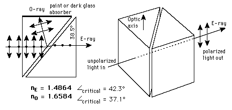

Glan-Foucault PrismThe Glan-Foucault prism achieves polarization by removing one plane of polarization by total internal reflection. It is made of two prisms of calcite with no other intervening material, i.e., with air between them. The O-ray is removed and the E-ray continues straight through the device as shown. One of the advantages of the Glan-Foucault prism is that it can handle the high power densities (about 100 watts/cm^2) characteristic of laser work. One disadvantage is a narrow field of view, about 10°. That field of view is widened in the Glan-Thompson prism, which has similar geometry but is cemented together. This extends the angle of view to about 30°, but cuts the maximum continuous power density by a factor of 100 to about 1 watt/cm^2. The presence of the cement in the Glan-Thompson prism means that the angles must be different, since the critical angle for total internal reflection depends upon the indices of refraction of both materials at an interface.
|
Index Polarization concepts | |
| HyperPhysics***** Light and Vision | Go Back |